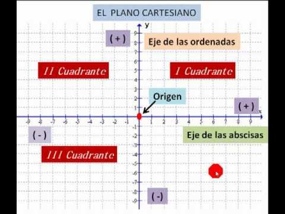

Elementos:
El plano cartesiano está formado por dos ejes numéricos perpendiculares llamados eje X (horizontal) y eje Y (vertical), los cuales se intersectan en un punto llamado origen. También incluye los cuadrantes, que son las cuatro regiones en las que se divide el plano, y los puntos o coordenadas que permiten ubicar cualquier posición mediante pares ordenados (x, y).
Caracteristicas:
Es un sistema bidimensional, ya que tiene dos dimensiones (ancho y alto). Es infinito, porque los ejes se extienden indefinidamente en todas las direcciones. Además, permite representar gráficamente funciones, figuras geométricas y relaciones matemáticas de forma precisa.

Conceptos:
• Punto: El punto constituye la unidad fundamental, dado que señala un lugar preciso en el espacio sin poseer dimensiones, lo que implica que carece de longitud, ancho y altura. Aunque se ilustra como una diminuta señal y se identifica con letras en mayúscula, esencialmente es un concepto abstracto que actúa como la base para crear diversas figuras geométricas.
• Recta: Una línea es una forma compuesta por una serie inacabable de puntos que se extienden en la misma dirección sin tener un inicio o un final. Carece de ancho o curvatura, y se ilustra como una línea continua que se extiende sin limitaciones en ambas direcciones.
• Distancia entre dos puntos: Es la longitud del segmento de recta que los une, y representa la separación entre ellos en el plano o en el espacio. Se calcula utilizando fórmulas matemáticas; por ejemplo, en el plano cartesiano se aplica la raíz cuadrada de la suma de los cuadrados de las diferencias de sus coordenadas.
• Punto medio de un segmento de recta: Es el punto que se encuentra exactamente a la misma distancia de sus dos extremos, dividiendo al segmento en dos partes iguales. En el plano cartesiano, se obtiene calculando el promedio de las coordenadas de los extremos.
• División de un segmento de una recta en una razón dada: Consiste en encontrar un punto que divide el segmento en dos partes proporcionales según una razón específica. Es decir, si un punto divide un segmento en la razón m:n, entonces las longitudes de las dos partes guardan esa proporción. En el plano cartesiano, las coordenadas de este punto se obtienen mediante una fórmula que combina las coordenadas de los extremos según dicha razón.
• Distancia de un punto a una recta: Es la longitud del segmento perpendicular que se puede trazar desde el punto hasta la recta. Es la distancia más corta posible entre el punto y la recta. En geometría analítica, se calcula con una fórmula que utiliza la ecuación de la recta y las coordenadas del punto.
• Ángulos entre dos rectas: Es la medida de la abertura que se forma cuando dos rectas se intersectan en un punto. Se puede medir en grados y siempre se toma el ángulo más pequeño entre ellas. En geometría analítica, este ángulo se calcula a partir de las pendientes de las rectas, lo que permite determinar si son paralelas, perpendiculares o inclinadas entre sí.
• Pendiente de una recta: Es una medida que indica su inclinación respecto al eje horizontal. Representa qué tanto sube o baja la recta cuando avanza de izquierda a derecha. En geometría analítica, se calcula como el cambio en “y” dividido entre el cambio en “x” entre dos puntos de la recta, y puede ser positiva, negativa, cero o indefinida según su dirección.
Formas de la ecuación de la recta:
• Forma común:
Es la ecuación de la recta cuando se conoce un punto de la recta y su pendiente.
Se expresa como:
y − y₁ = m(x − x₁)
donde m es la pendiente y (x₁, y₁) es un punto de la recta.
• Forma sintética:
Es la forma que muestra directamente la pendiente y la intersección con el eje Y.
Se expresa como:
y = mx + b
donde m es la pendiente y b es el valor donde la recta corta el eje Y.
• Forma general:
Es la forma que representa cualquier recta en el plano cartesiano sin despejar ninguna variable.
Se expresa como:
Ax + By + C = 0
Donde A,B y C son números reales y no pueden ser todos cero al mismo tiempo. En esta forma, la ecuación incluye a x y 𝑦 en el mismo lado de la igualdad, lo que permite trabajar con distintas propiedades de la recta sin necesidad de despejar.
Obtención de la ecuación de la recta:
• Que pasa por dos puntos:
Es el método que se usa cuando conocemos dos puntos de la recta. Primero se calcula la pendiente con la fórmula:
Después se sustituye en la forma punto-pendiente:
y se simplifica hasta obtener la ecuación final de la recta.
• Punto pendiente:
Es la forma que se usa cuando se conoce un punto de la recta y su pendiente. Se expresa como:
donde m es la pendiente y (x1, y1) es un punto conocido de la recta. Esta forma permite construir la ecuación de manera directa a partir de un punto.
• Pendiente y ordenada al origen:
Es la forma que muestra directamente la pendiente y el punto donde la recta corta al eje Y. Se expresa como:
donde m es la pendiente y b es la ordenada al origen, es decir, el valor de y cuando x = 0
Es el método que se usa cuando conocemos dos puntos de la recta. Primero se calcula la pendiente con la fórmula:
Después se sustituye en la forma punto-pendiente:
y se simplifica hasta obtener la ecuación final de la recta.
• Punto pendiente:
Es la forma que se usa cuando se conoce un punto de la recta y su pendiente. Se expresa como:
donde m es la pendiente y (x1, y1) es un punto conocido de la recta. Esta forma permite construir la ecuación de manera directa a partir de un punto.
• Pendiente y ordenada al origen:
Es la forma que muestra directamente la pendiente y el punto donde la recta corta al eje Y. Se expresa como:
donde m es la pendiente y b es la ordenada al origen, es decir, el valor de y cuando x = 0